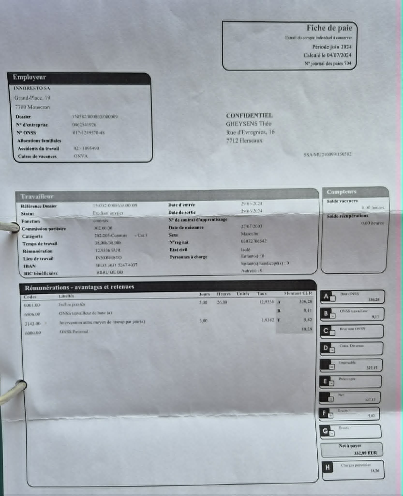

Activités d'Acquisition de Compétences
CyberSecurity Challenge Belgium
Capture The Flag (CTF)Activités réalisées
Participation au CyberSecurity Challenge Belgium, une compétition nationale de cybersécurité de type Capture The Flag (CTF) d'une durée de 24h. J'y ai participé avec 3 camarades de classe. Nous avons résolu plusieurs challenges, qui nous ont fait terminer à la 156e place avec un score de 850 points.
Analyse réflexive
Le format 24h était intense : il a fallu se répartir les challenges et accepter de rester bloqué longtemps sans abandonner. J'ai découvert de nouveaux outils et compris qu'en cybersécurité, savoir chercher l'info compte autant que la technique. Cette expérience m'a fait découvrir des situations où il faut tester, se tromper et recommencer, une logique utile en développement comme en embarqué.
Preuve de participation


Job étudiant - Serveur & Barman
Expérience professionnelleActivités réalisées
Depuis novembre 2023, je travaille en tant que serveur et barman au Restaurant Les Charmettes (Groupe Moresto), à raison de 7 à 12 heures minimum par week-end. Mes tâches incluent le service en salle, la gestion des commandes au bar, l'accueil et le conseil des clients. Cette expérience m'a permis de développer des compétences en gestion du stress, travail en équipe, communication et organisation dans un environnement exigeant et dynamique.
Analyse réflexive
Ce travail comme serveur et barman aux Charmettes depuis novembre 2023, chaque week-end, n'est pas lié à l'informatique, mais c'est l'expérience qui m'a le plus fait grandir humainement. Entre services saturés, clients exigeants et imprévus, j'ai appris à prioriser sous stress, communiquer clairement et garder mon calme. Je retrouve ces réflexes quand un bug bloque un projet à la veille d'une deadline. Pour mon futur métier, je sais que je serai à l'aise dans des environnements exigeants et en équipe.
Preuve de participation

Reply Code Challenge 2024
Challenge de programmationActivités réalisées
Participation au Reply Code Challenge, le 21 mars 2024 de 16h30 à 20h00. J'ai réalisé ce challenge avec un ami qui devait le présenter dans le cadre d'un de ses cours. C'était une très chouette expérience, avec une ambiance conviviale, ses professeurs ont offert les pizzas à tous les participants sur place. Le challenge consistait à résoudre un problème algorithmique, un problème de pathfinding sur une grille avec des points d'or et d'argent, que nous avons abordé en Python.
Analyse réflexive
J'ai participé au Reply Code Challenge 2024 en binôme avec un ami, sur un problème de pathfinding résolu en Python. En 3h30, j'ai compris que la réflexion algorithmique en amont fait gagner bien plus de temps que de coder directement. L'ambiance conviviale sur place m'a donné envie de retenter ce genre de compétition pour progresser en algorithmique, une compétence utile autant en web qu'en embarqué.
Preuve de participation


Site web de l'ASBL Patka
Développement webActivités réalisées
Réalisation d'un site web de présentation pour une ASBL dont je suis membre, Patka. J'ai conçu et développé l'intégralité du site (structure HTML, mise en page CSS, contenus), puis déployé le site en ligne via Vercel.
Analyse réflexive
Ce projet m'a permis de mettre en pratique mes compétences en développement web sur un besoin concret et utile à l'ASBL. Au-delà de la technique, j'ai dû réfléchir à l'expérience utilisateur : quelles informations mettre en avant, comment rendre le site clair pour des visiteurs non techniques. La mise en ligne via Vercel et la gestion du dépôt GitHub m'ont aussi familiarisé avec les outils réels d'un développeur web.
Preuve de participation
Site en ligne : https://patka.vercel.app/index.html
Code source : https://github.com/thgheysens/Patka
Formation KNX ETS eCampus
Formation certifiante - DomotiqueActivités réalisées
Formation en ligne ETS eCampus dispensée par la KNX Association, certifiée le 23 avril 2026. KNX est un standard mondial pour les solutions de smart home et smart building. La formation m'a permis de découvrir le protocole KNX, la topologie d'une installation, le paramétrage d'appareils et la prise en main du logiciel ETS utilisé par les intégrateurs pour configurer et mettre en service une installation domotique.
Analyse réflexive
J'ai suivi cette formation par intérêt personnel pour la domotique et les systèmes embarqués, un domaine qui rejoint directement mon projet professionnel. Au-delà de l'aspect théorique, j'ai apprécié de comprendre comment des composants physiques s'intègrent dans une logique de programmation et de configuration. Cette formation renforce ma conviction que je veux évoluer vers les systèmes connectés et embarqués.
Preuve de participation

Certificat officiel KNX Association (note : 87%) : Voir le certificat (PDF)
Mini-jeu Arduino "Retrobox"
Projet personnel - Système embarquéActivités réalisées
Conception et développement d'une mini console de jeux rétro sur Arduino, baptisée "Retrobox". Le projet intègre un écran LCD I2C 16x2, un joystick analogique, une télécommande infrarouge, une série de LEDs et de boutons poussoirs, ainsi que la sauvegarde des scores en EEPROM. J'ai programmé en C/C++ (Arduino) un menu de sélection permettant de lancer quatre mini-jeux : Higher/Lower, Morse Trainer, Rhythm Tap et Lucky Dice. Le code source est hébergé sur GitHub, ce qui m'a permis de versionner le projet et de documenter mon travail.
Analyse réflexive
Ce projet rejoint directement mon intérêt pour le développement embarqué : voir mon code se traduire par une action physique (LEDs qui s'allument, affichage LCD, lecture de signaux IR) est exactement ce qui me motive dans ce domaine. Cela m'a appris à raisonner en termes de ressources limitées et à structurer un programme autour d'une boucle principale réactive aux entrées utilisateur. Cette expérience renforce ma volonté de m'orienter vers les systèmes embarqués et l'IoT après mon BAC3.
Preuve de participation
Code source (Arduino) : retrobox.ino
Dépôt GitHub : https://github.com/thgheysens/mini-jeu
Formation AI Fundamentals - IBM SkillsBuild
Formation certifiante - Intelligence ArtificielleActivités réalisées
Formation en ligne "AI Fundamentals with IBM SkillsBuild" dispensée par IBM via le programme Cisco Networking Academy, certifiée le 28 avril 2026. Cette formation couvre les bases de l'intelligence artificielle : machine learning, deep learning, traitement du langage naturel (NLP) et vision par ordinateur. Elle inclut également une prise en main pratique de la plateforme IBM Watson Studio, permettant d'expérimenter concrètement avec des modèles d'IA.
Analyse réflexive
J'ai suivi cette formation pour comprendre les bases de l'IA, un domaine qui transforme aujourd'hui tous les secteurs de l'informatique. Au-delà des concepts théoriques, cette formation me donne une base solide pour comprendre où et comment intégrer de l'IA dans mes futurs projets, qu'il s'agisse d'analyse de données pour une application web ou de détection d'anomalies dans un système embarqué. C'est aussi une certification valorisable côté employeurs, dans un domaine où la demande explose.